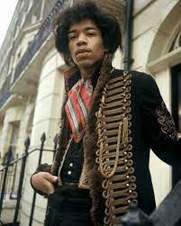

Jimi Hendrix

One of the Greatest Guitar Players Ever
One of the Greatest Guitar Players Ever
Down the street you can hear her scream "you're a disgrace" As she
slams the door in his drunken face And now he stands outside and all
the neighbors start to gossip and drool He cries "oh girl, you must be
mad What happened to the sweet love you and me had?" Against the door
he leans and starts a scene And his tears fall and burn the garden
green And so castles made of sand, fall in the sea, eventually A
little Indian brave who before he was ten, played war game sin The
woods with his Indian friends, and he built a dream that when he Grew
up, he would be a fearless warrior Indian Chief Many moons passed and
more the dream grew strong, until tomorrow He would sing his first war
song And fight his first battle, but something went wrong Surprise
attack killed him in his sleep that night And so castles made of sand,
melts into the sea, eventually There was a young girl, whose heart was
a frown Because she was crippled for life, and couldn't speak a sound
And she wished and prayed she would stop living, so she decided to die
She drove her wheel chair to the edge of the shore, and to her legs
she smiled You won't hurt me no more But then a sight she'd never seen
made her jump and say Look, a golden winged ship is passing my way And
it really didn't have to stop, it just kept on going And so castles
made of sand slips into the sea Eventually